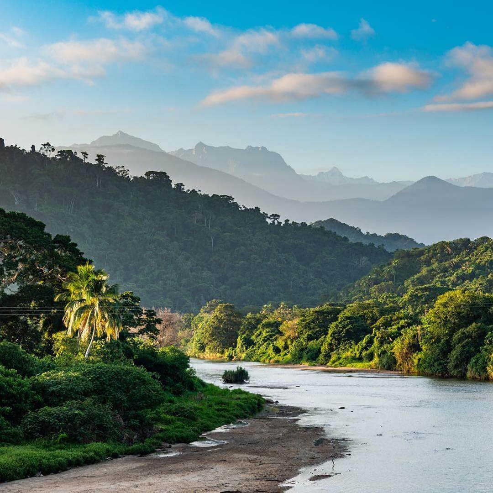

Entre Santa Marta y Riohacha se encuentra Palomino, un destino que posee paradisíacas playas de arena blanca, aguas azules y abundante vegetación. Por ello, este lugar se ha convertido en el refugio para el descanso de los turistas nacionales y extranjeros. Las playas de Palomino son realmente un santuario para el descanso y la relajación. Sus paisajes verdes que contrastan con la inmensidad del mar Caribe y el sonido del agua son elementos que garantizan un día de completa armonía. Asimismo, dentro de esta playa es posible gozar de las cálidas aguas caribeñas a través de un delicioso baño. Cabe recordar que hay temporadas en el que el fuerte oleaje del mar impide esta actividad.

Palomino es todo lo que necesitas para conectarte con un ambiente bohemio, de paisajes increíbles, playas hermosas con un oleaje perfecto para aprender a surfear, y un entorno cultural.
Las playas de Palomino son en realidad un encanto, el oleaje, el clima, el ambiente, y todo lo que lo rodea es perfecto para sentir la calma y la tranquilidad.
Nada más imagina estar en una playa del caribe en medio de la selva y el mar, de fina arena blanca y cálidas aguas azules, y en el fondo tener las imponentes montañas de la Sierra Nevada de Santa Marta.
Referencias
5 razones para visitar Palomino en la Guajira